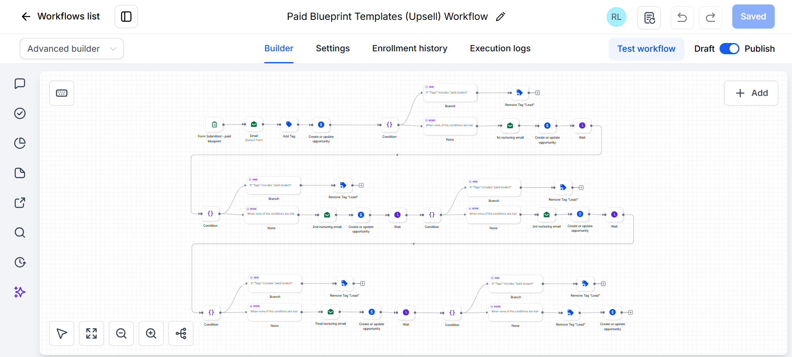

Course Sales & Enrollment System in GoHighLevel
A complete course system built in one GoHighLevel account. A free blueprint brings in leads, a four-page funnel sells the paid blueprint, and workflows enroll students, send the right emails, and update the CRM pipeline, with an AI agent answering questions along the way.
What I built

Course Sales Funnel: Landing, Checkout, Upsell & Thank-You Pages
Built the four-page funnel that takes a visitor from the landing page through checkout and a one-click upsell to the thank-you page.

Free Blueprint Lead Workflow
Captures every free blueprint request, saves the contact, tags it, opens an opportunity, and starts the nurture emails.

Paid Blueprint Upsell Workflow
Tracks paid blueprint purchases, updates tags and opportunities, and removes buyers from promotional emails they no longer need.

Starter Blueprint Enrollment Workflow
Identifies enrolled students, applies the Paid Student status, updates the CRM, and checks for a paid blueprint purchase.

Lead Nurturing CRM Pipeline
A pipeline that tracks each contact from first lead through the follow-up stages, and updates as they buy or enroll.

AI Support Agent
An AI agent that answers questions, guides visitors, captures leads, and supports follow-up conversations.

Email Marketing & Lead Nurturing Sequences
Automated email sequences for course enrollment and template sales that move prospects from lead to customer.